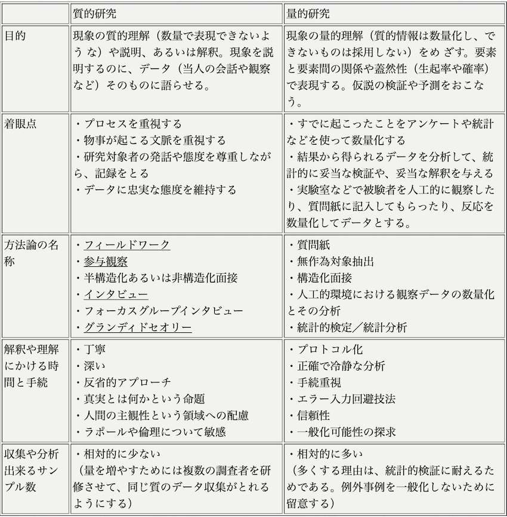

【ゼミ日記】
｡:+* ゜ﾟ *+:｡:+* ﾟ ゜ﾟ *+:｡:+* ﾟ ゜ﾟ *+:｡｡:+* ﾟ ゜ﾟ *+:｡:+* ﾟ ゜ﾟ *+:｡:+* ﾟ ゜ﾟ *+:｡｡:+* ﾟ ゜ﾟ *+:｡:+* ﾟ ゜ﾟ *+:｡:+* ゜ﾟ *+:｡
これから、ここにはゼミに関しての自分の心境や、日頃あった出来事からのアイデアなど
思ったことをなんとなく書いていこうと思う。参考になるかはわからないが、
後々見返してヒントになるようなことがあるといいな。
10月7日
なんとなくこのページを作ってみた。
アンケートの数がなかなか集まらない。男女での統計もとってみたいが、まじは母数を増やす。
引き出物アイテムに関してのアンケートを行なっているが、自分は結婚式に参加したことが3回しかない。
しかもそのうち2回は記憶がないし、引き出物もいただいたことはないため、これは私の想像上の話だが、
食器類はぶっちゃけいらない。割っちゃうし、価値もわからない、ああいうのは消耗品だから百均でいいんだよね。百均しか勝たん！！
引き出物において、写真や名前入りグッズを贈る人はどういう心境で、選んだのだろうか。
若い年代で、残念と思わないのは「ネタ」的に面白いからだろうと考えられるが、中間世代でウケが悪いのは明白だろう。
逆に60代以上の方にアンケートのついでに質問したが、写真・名前入りグッズが人気なのは、「あんなに小さかったあの子がこんなに男前・綺麗になって」と
記念品や思い出として世界に一つしかないものとしての価値があるからだという。
気持ちはわからんでもない。
10月8日
道用先生に、脱線しているのをやはり指摘された・・・
引き出物に囚われすぎで、４年生の卒論のネタにはなるが、今やるべきことではないと。
とりあえず、今行っているアンケートの集計と考察を済ませた後、新郎新婦の部分に入っていく。
ケーキ入刀でいいのかな・・・引き出物の二の舞になりませんように
10月9日
結婚式・披露宴においての演出に関するアンケートフォームを作成した。ページは、研究ノートのトップから飛べる。
前回の2つのアンケートより、本質の部分に近づけたと思う。
得られた情報をうまく活用できなければ意味はないので頑張りたい。
今日放送されたぐるナイSPで、本並さんと丸山香里奈さん夫妻のファーストバイトが放送された。
大きなスプーンで新婦が新郎に食べさせるのはインパクトがある。
どうやら、新婦側には「一生美味しいごはんを作ります」という意味が込められているらしい。おいしいご飯作れねえや・・・どうしよう・・・（？）
あの演出が「ファーストバイト」というのは初めて知ったが、
近年では割とポピュラーな演出らしいので、アンケートの選択肢にも加えてみた。
10月14日
またアンケートフォームに新しい要素を追加した。
そして、アンケート対象者に「結婚とはあなたにとって何であるか？」という質問も加えた。
これは、アンケート回答とその人にとっての結婚に関する考え方に相関関係がないかどうか興味があるからである。
今日中に、調べた演出についてまとめて、コレスポンデンス分析の準備に取り掛かりたい。
10月15日
高野くんの研究でも触れられていたが、コレスポンデンス分析を行う
昨日やる予定だった要素（かわいい・幻想的など）を考えないで寝たので今日は絶対やる
階層クラスター分析ってやったような気もするけどなんだっけ・・・
10月16日
コレスポンデンス分析のアンケートフォームを作成した。以前と同様かなりボリュームのある
アンケートになってしまった・・・
結婚披露宴の演出についてそれぞれ調べてみると、今まで知らなかった演出や名前がついていること自体に驚くものもあった。
ウェディングケーキに関する論文はまだ読み切っていないが、参考になる部分が多いと感じた。
自分が何を研究したいのかブレないよう頑張りたい
10月21日
面白い論文を何個か見つけたので読んでみたい
「未婚者が結婚式・披露宴を「行いたい」と考える意識について～多くの未婚者が「行いたくない」と否定する時代にあって～今井重男」
「株式会社レックの「小さな結婚式」サービス・サプライチェーンと市場創造のイノベーション ─ 株式会社レック ─」
10月23日
アンケートの項目欄がおかしかったので修正を加えた
全然回答数が増えないので色々なところに協力を求めないと・・・
最近また停滞気味で、ものづくりじゃないから人一倍やらなきゃなのに全然進まない・・・
11月2日
アンケートが少しずつ集まってきた、分量が多いから集まりが悪いのも当然だと思った。
今月はこの分析をやりながら、挙式スタイルの違いとそれに伴う演出について調査を進める。
思い通りに研究が進まなくてもとにかく手を止めないこと。
11月4日
自分が具体的に何をやりたいのかそろそろ明確にしたい。
結婚式に関する費用や引き出物、演出に関してや挙式のスタイルについて調べてきたが、
どの挙式スタイルでもできるものなのか、それとも披露宴でできるようなものなのか
結婚式がどのようなものであるか自分の思いもしっかりさせたい。
11月5日
ゼミにて、私がやっていることが「分析アプローチ」であると指摘された。
今やっているアンケートは、直感的にわかることではないか。
インタビューをもとに、どういう理想が考えられるか、これで満足しているのか
していないとしたら、どういう結婚式が理想なのか結婚式というものの中で、どういうのが理想なのか
何かを真似たものにならないかという指摘
→インタビュー！！！！

12月1日
インタビューを闇雲にすることに疑問を感じ、道用先生に助けを求めた。
薄々わかっていたことではあるが、やっぱりただインタビューをするだけでは、何もこの先にはないと。
12月の研究ページにも載せてあるが、参考になる具体例をいただいた。
12月4日
インタビュー対象者が、家族や親戚その知り合いなどに限定され、自分と近い立場の人間だけになっ
てしまっていることを指摘されたので。
自分とは全く異なる立場の人にインタビューしたいと思う。
しかしながら、そう簡単にはいかないので、SNS、結婚式場サイトや「先輩花嫁の掲示板」などを利用し、結婚式においての成功や後悔、バッググラウンドストーリーなどの「生の声」を探した。
結果、ゼクシィの調査でも述べられていたように結婚式費用は増加傾向にあるものの、
招待人数が減少していることがあらためてわかった。また、今年は例年の傾向や流れなど関係なくなってしまうような大きな変化があった。
「新型コロナウィルス」である。これにより、思った通りに招待客を呼べない、
式自体の中止や延期が決まったカップルが多くいた。詳しくここでは述べないが（別途でまとめる）
プレ花嫁たちの本当に大切な人を気づかされたという言葉でや、遠く離れているからこそ繋がりを重視するという部分から、
式参加者以外にも結婚式に「参加」してもらえる伝統を考えたいと思うようになった。
12月7日
今までにないものであるという事と伝統、そして繋がりを実感できるという意味で
私は日本の伝統芸能である組紐に目をつけた
12月16日
これ以上は平面上や頭の中で考えるには限りがある。
プロトタイプを作るということで。まずは実際に組紐を編んでみる。
本来であれば、絹糸を使用するが毛糸や刺繍糸でやってみる。
画像は来週までにアップする予定。どのように、それ俺の組紐を繋げるかも考える必要がある。
｡:+* ゜ﾟ *+:｡:+* ﾟ ゜ﾟ *+:｡:+* ﾟ ゜ﾟ *+:｡｡:+* ﾟ ゜ﾟ *+:｡:+* ﾟ ゜ﾟ *+:｡:+* ﾟ ゜ﾟ
*+:｡｡:+* ﾟ ゜ﾟ *+:｡:+* ﾟ ゜ﾟ *+:｡:+* ゜ﾟ *+:｡